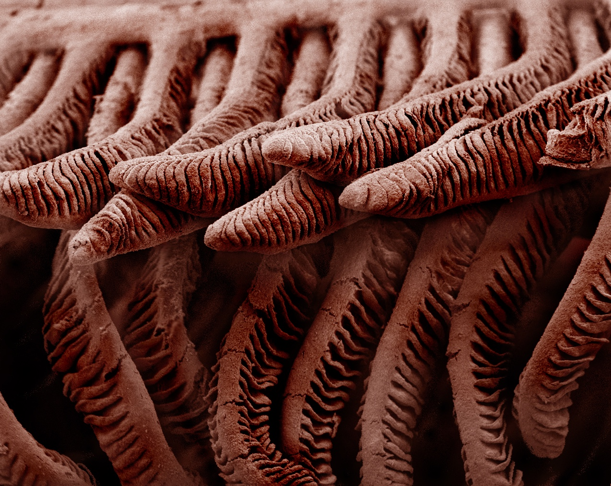
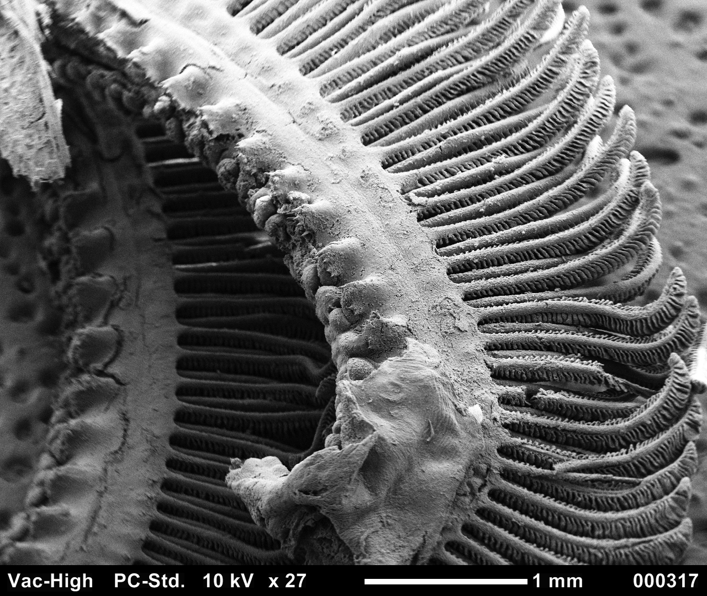
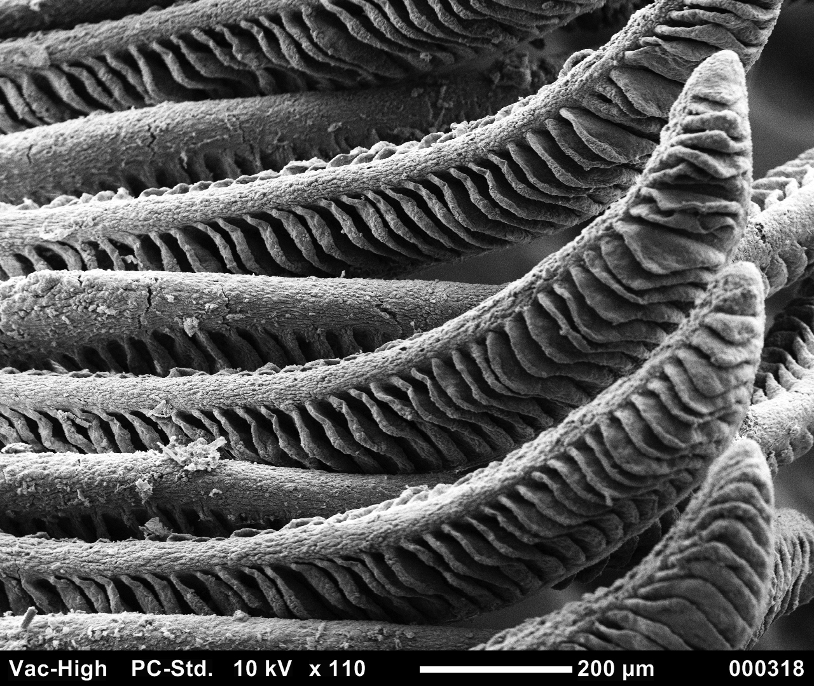
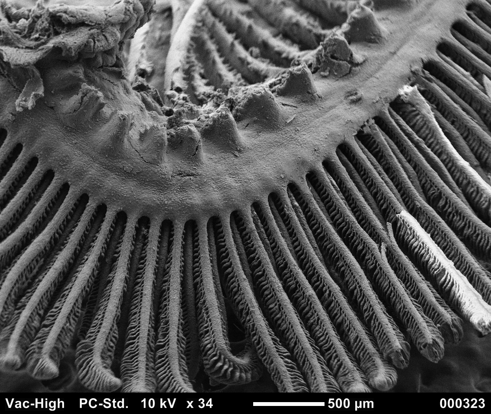

Scanning Electron Microscopy
Colorized Surfperch Gills, this picture used focus stacking in photoshop of 3 images taken using a scanning electron microscope, and then has been colorized in Pixlr.
Surfperch Gill Arches
Gill Lamellae
Gill Arch